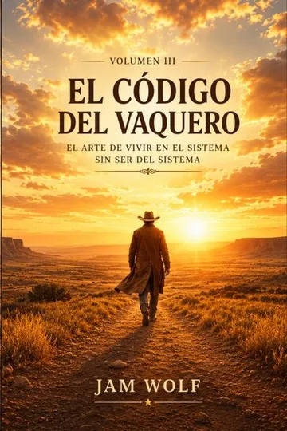
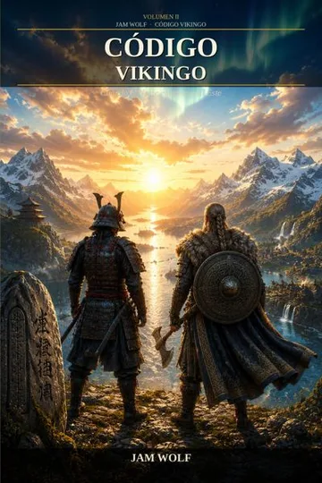
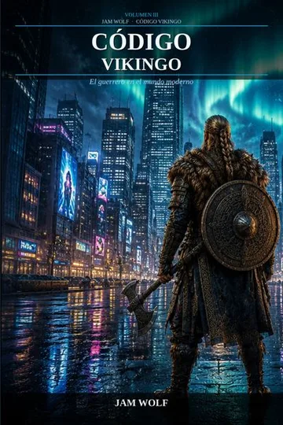
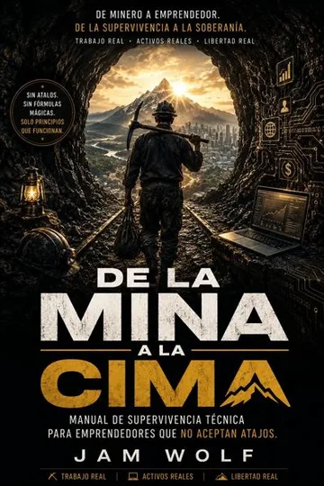

La nueva novela de JAM WOLF
No sabía adónde iban.
La niña que leía los labios
Una niña sorda, un internado donde las manos están prohibidas y una promesa: la vendrán a buscar «más adelante».
Empieza a leer · sin registro
Uno
El carro se paró en la cuesta y Reme se despertó porque había dejado de moverse.
Tenía la cara contra el saco de las patatas y la manta de su madre por encima hasta las orejas. Lo primero que vio fue la nuca de su padre, con el pelo cortado a cepillo y la raya blanca que le dejaba la gorra, y por encima de la nuca el cielo, que ya no era negro, sino del color del agua de fregar. La mula sacudió la cabeza. Su padre se bajó, se fue a la cuneta, se puso de espaldas y se quedó un rato quieto con las piernas abiertas. Del suelo subía un vaho.
Pablo iba sentado delante, en el pescante, con las riendas en la mano, como un hombre. Se volvió y la vio despierta. Le hizo lo del padre: se caló la gorra hasta las cejas con dos dedos, bajó la boca por las esquinas y puso los ojos de la mula cuando no quiere andar. Reme se rió con la cara en el saco.
Seguir leyendo
El padre volvió, se subió, le quitó las riendas a Pablo sin mirarlo y siguieron.
Habían salido de noche. De eso se acordaba a trozos: su madre en la puerta con el candil; su madre atándole el pañuelo por debajo de la barbilla, demasiado fuerte; su madre metiéndole en el hatillo una hogaza de las de casa, la oscura, la de corteza dura que había que mojar, y dos chorizos y una cosa envuelta en un trapo que no le dejó ver. La mano de su madre en la cara, áspera de la leña. Luego nada, porque se había dormido antes del puente.
No sabía adónde iban. Sabía que era lejos, porque llevaban la mula y no el burro, y porque le habían puesto los zapatos de la prima Encarna, que le estaban grandes y que nadie se ponía para ir cerca. Sabía que era por los oídos, porque desde el verano todo el mundo le señalaba las orejas: el cura, la de la tienda de abajo, el hombre de la bata que vino un día en un coche negro y se puso detrás de ella y le dio palmadas junto a la cabeza, que ella notó solo por el aire, y luego le dijo algo a su madre que hizo que su madre se sentara en el escalón. Y sabía que Pablo lo sabía, porque desde el domingo Pablo no la miraba a los ojos más que para hacer tonterías.
Bajaban. El camino se iba abriendo y los montes se iban quedando detrás, más azules a cada vuelta, y aparecían cosas que Reme no había visto nunca: un pueblo entero con las casas pintadas de blanco, una tapia larguísima con letras, un hombre en bicicleta que les adelantó con un saco a la espalda y que se volvió a mirarlos como si los raros fueran ellos. Un perro de color canela les salió de una era y se puso a andar detrás del carro. Pablo le tiró una piedra pequeña sin ganas de darle. El perro siguió. Siguió una curva, y otra, y en la tercera se sentó en mitad del camino y se quedó allí, mirándolos irse, y Reme lo estuvo mirando hasta que fue un punto y luego nada.
¿Quieres saber adónde iban?
Otras lecturas de JAM WOLF
¿Qué quieres sentir con tu próxima lectura?
Algo que me encoja el corazón
Un código para cambiar mi vida
Miedo, leyenda y bosque
Fuerza para empezar de cero
Poesía para leer despacio
Una historia de estrategia y poder
El sello
JAM WOLF
Jam Wolf es un seudónimo. Detrás no hay una marca personal que vender, sino un código: disciplina sin excusas, soberanía sobre la propia vida y la convicción de que nadie viene a rescatarte.
- Obras
- 22
- Series
- 4
- Idiomas
- 3
Series
Cuatro códigos, una misma columna vertebral
Wolf Ethic
Cómo salir de la dependencia y construir una vida que nadie pueda confiscar.


El Código del Vaquero
Una trilogía sobre vivir dentro del sistema sin pertenecer a él.

Código Vikingo
La voluntad del Norte como forma de vida, en tres volúmenes.


Protocolo Samurái
Disciplina, estrategia y camino: tres libros y un relato de dos épocas.


Catálogo
Todas las obras
-
El Protocolo de la Cero Dependencia
Wolf Ethic · I
Volumen I · español, inglés y portugués.
-
Construir sin Permiso
Wolf Ethic · II
Volumen II · inglés y español.
-
Anatomía de un sistema sin escrúpulos
El Código del Vaquero · I
Volumen I de la trilogía.
-
El que juega con sus propias reglas
El Código del Vaquero · II
Volumen II de la trilogía.
-
El arte de vivir en el sistema sin ser del sistema
El Código del Vaquero · III
Cierre de la trilogía.
-
La voluntad del Norte como sistema de vida
Código Vikingo · I
Volumen I de la trilogía.
-
Cuando el Norte encuentra al Este
Código Vikingo · II
Volumen II de la trilogía.
-
El guerrero en el mundo moderno
Código Vikingo · III
Cierre de la trilogía.
-
Protocolo Samurái
Protocolo Samurái · I
Libro I · Disciplina, honor y soberanía personal.
-
Protocolo Sol Naciente
Protocolo Samurái · II
Libro II · La estrategia en la sombra.
-
Protocolo Nipón
Protocolo Samurái · III
Libro III · El terreno, la mirada y el camino.
-
Sombra Samurái
Protocolo Samurái · IV
Dos épocas. Un mismo código.
-
Estrella Oculta
Poesía · I
197 poemas sobre la vida que ocurre cuando nadie mira.
-
Letras de Colores Rotos
Poesía · II
Poesía.
-
100 Poemas para Nora
Poesía · III
Cien poemas. Una niña en el centro. Y todo un mundo alrededor.
-
La niña que leía los labios
España rural, mediados del siglo XX. Reme no oye y no sabe leer. Una novela sobre la infancia, la amistad y el derecho a ser entendida.
-
La Promesa del Alma
Novela inspirada en una experiencia cercana a la muerte.
-
NEKRA: Aullidos Oscuros
Misterio, leyenda y naturaleza.
-

De la Mina a la Cima
Manual de supervivencia técnica para emprendedores.
-
Soberanía Absoluta
Libertad financiera y mentalidad estoica.
-
Mentalidad de Inquebrantable
Autodisciplina radical contra la procrastinación.
-
El Código del Lobo
La novela que dio origen a la marca.
Para autores
Producción editorial para tu libro
PDF y EPUB listos para KDP, corrección, sinopsis y metadatos. Presupuesto claro antes de empezar. Ver servicios y precios.
Respondo personalmente a cada mensaje, normalmente en 24-48 h.